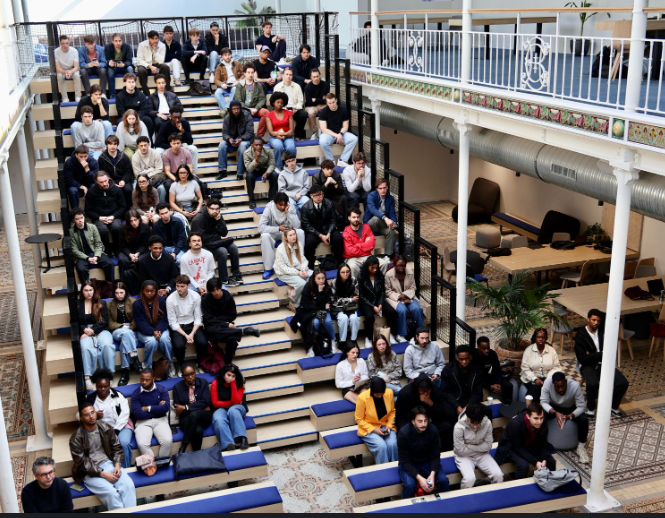

Étudiant en MSc Data & AI for Business à Albert School (Eugenia School), je suis passionné par l’analyse de données et l’intelligence artificielle.
Actuellement étudiant en MSc Data & AI for Business à Albert School (Eugenia School), je développe une approche analytique orientée business et résultats.
Mon parcours m'a permis de travailler sur des projets variés en SQL, Python, Power BI, Dataiku, Tableau et des outils d'automatisation comme Make et N8n. Je cherche à appliquer ces compétences à des problématiques concrètes et je recherche un stage en Data Analyst pour septembre 2027, d'une durée de 6 mois.

Je recherche un stage de 6 mois en tant que Data Analyst à partir de septembre 2027. N'hésitez pas à me contacter !
Envoyer un email ✉️